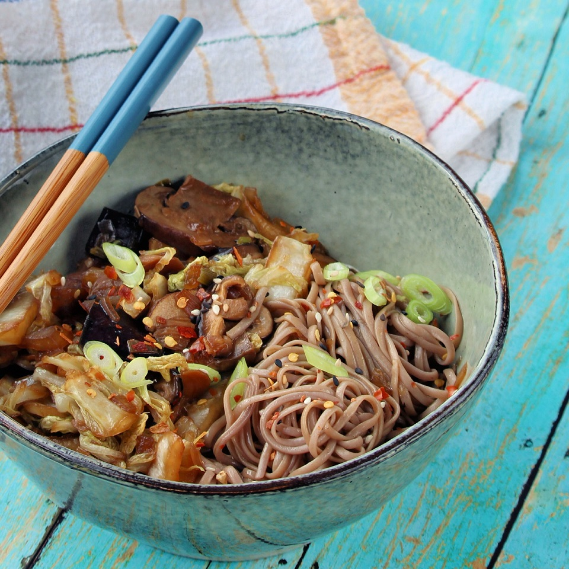

Heat oil in a large pot over medium heat. Brown chicken breasts
for 4 to 5 minutes on each side. Shred and set aside.
To the pot add onions and garlic; saute for 2 minutes, or until
onions are translucent. Pour in chicken broth.
In a medium bowl combine masa harina with 2 cups of water and
whisk until well blended.
To the onions and garlic add the masa harina mixture, remaining
water, enchilada sauce, cheese, salt, chili powder and cumin.
Bring to a boil; add shredded chicken. Reduce heat to low and
simmer 30 to 40 minutes, or until thickened.
1 tablespoon vegetable oil
1 pound boneless, skinless chicken breast halves
½ cup diced onion
1 clove garlic, minced
4 cups chicken broth
1 cup masa harina
3 cups water, divided
1 cup enchilada sauce
1 pound processed cheese, cubed
1 teaspoon salt
1 teaspoon chili powder
½ teaspoon ground cumin
Prep: 10 minutes
Cook: 1 hour 30 minutes
Total: 1 hour 45 minutes
Servings: 8
Yield: 8 servings
Air Fryer Hot Dogsmore_vert
269 Calories
Air Fryer Hot Dogsclose
Preheat air fryer to 390 degrees F (200 degrees C).
Place buns in the basket of the air fryer and cook for 2 minutes.
Remove buns to a plate.
Place hot dogs in the basket of the air fryer and cook for 3
minutes. Transfer hot dogs to buns.
4 hot dog buns
4 hot dogs
Prep: 10 minutes
Cook: 10 minutes
Total: 25 minutes
Servings: 4
Yield: 4 servings

Garden Stir-Fry Noodlesmore_vert
326 Calories
Garden Stir-Fry Noodlesclose
Bring a large pot of lightly salted water to a boil. Cook soba in
boiling water, stirring occasionally, until noodles are tender yet
firm to the bite, 5 to 6 minutes. Drain.
Heat oil in a large skillet over medium heat. Add onion and garlic
and stir-fry for 1 minute. Toss in mushrooms and eggplant; cook
for 2 minutes more. Add cooked soba noodles, bok choy, soy sauce,
teriyaki sauce, and pepper. Cook until bok choy is tender, about 2
minutes.
Sprinkle sesame oil and green onion over vegetables and serve.